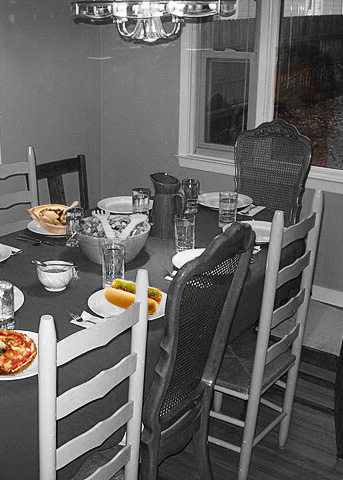

For this photomontage, I wanted to touch on one of the biggest political scandals that is happening in the United States
right now. Before you continue, I would like to give a trigger warning, although I am trying to keep the background
information as broad as possible, the information is still uncomfortable to read about. You have been warned. The Epstein
Files is filled with many disgusting emails and pictures relating to the unspeakable things rich and famous people have
done to little kids. In said emails, readers have figured out that there was a code where certain foods symbolized a certain
group of individuals.
In my photomontage, I gathered pictures of some of the food that were code names in the files. I placed them onto a dinner
table, symbolizing one of the actions that were done. I made the background picture black and white (using the presets on
the side) to make the food images pop and used the masking tool to help make the images look more in sync with the dinner
table (like how I did with the hot dog). Using non-destructive editing techniques allows me to easily make changes to one
of the photos without having to alter the background or the rest of the food images.If you look closely at the window, you
can see I added a figure of a man. That is Epstein. I wanted to make an uncomfortable feeling of a person being watched,
and what better than to use a picture of the man himself. I used the Multiply blending mode and I lowered the opacity in
order for it to look sinister and menacing. All of the pictures used in this photomontage are from “Wikimedia Commons”.